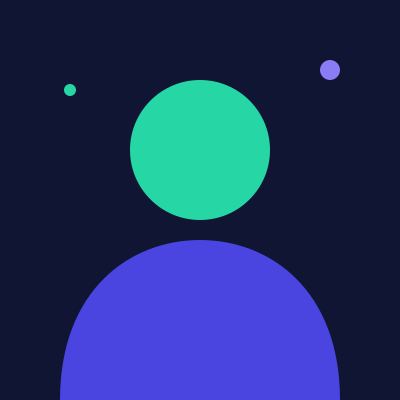

Discha Uli Virghylia Hutasoit
Aspiring AI Engineer & Full-Stack Developer
Ringkasan
Mahasiswa Informatika yang tertarik membangun aplikasi web dan sistem berbasis kecerdasan buatan. Terbiasa mengerjakan antarmuka yang responsif dengan HTML, CSS, Bootstrap, dan Tailwind. Sedang mendalami pemanfaatan model bahasa untuk membantu pekerjaan sehari-hari.
Pengalaman
-
Asisten Praktikum Pemrograman Web
2025 – 2026Program Studi Informatika
- Mendampingi mahasiswa semester awal saat praktikum HTML, CSS, dan JavaScript.
- Menyiapkan contoh kode dan memeriksa tugas mingguan.
-
Anggota Divisi Teknologi
2024 – 2025Himpunan Mahasiswa Informatika
- Membangun website pendaftaran untuk acara seminar teknologi tingkat kampus.
- Merapikan repositori kode organisasi dengan alur Git yang seragam.